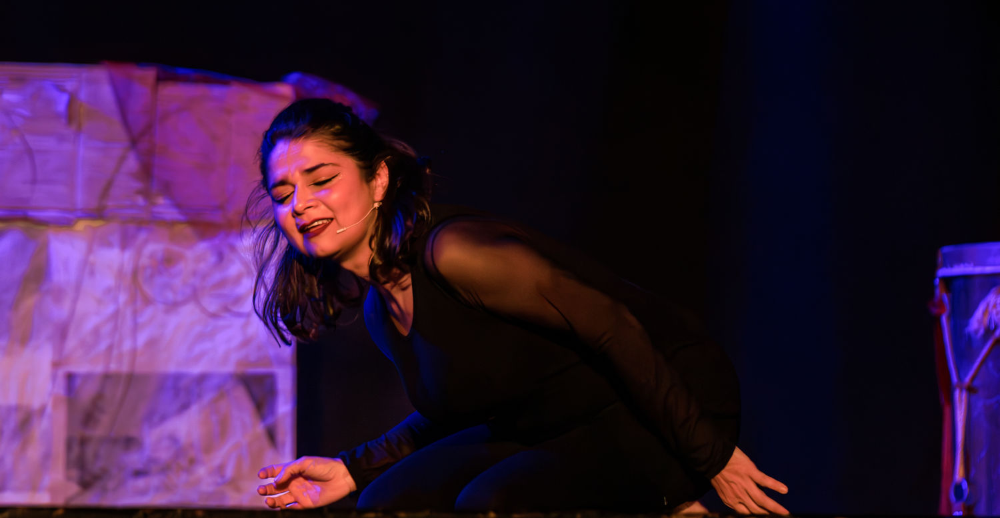
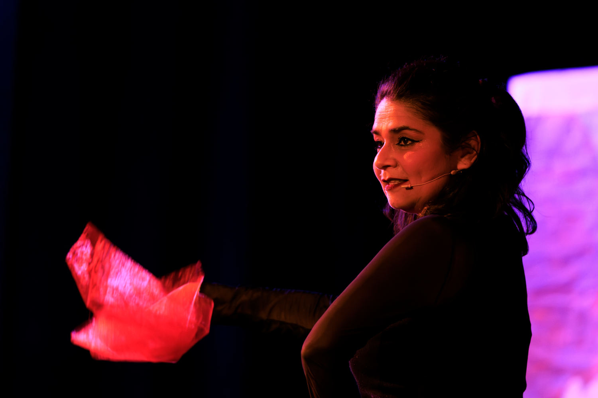
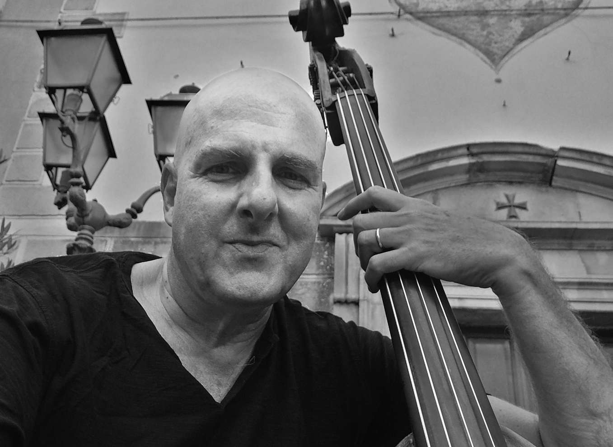

Canti d’Argilla, la mia voce ha mille corpi.
Spettacolo teatrale e musicale scritto ed interpretato da Monserrat Olavarria Balmaceda.
Regia di Arianna Arista.
Musica di Ermanno Dodaro e Monserrat Olavarria Balmaceda.
Uno progetto nato nel 50esimo anniversario del colpo di Stato del 1973 in Cile. Racconti di donne di tre generazioni, che direttamente o indirettamente hanno vissuto il Golpe e l’esilio in Italia. Racconti raccolti, cantati e interpretati dalla cantante e scrittrice cilena Monserrat Olavarria Balmaceda. La narrazione si snoda attraverso la musica, la parola e il movimento creativo.

Il lavoro nasce da una ricerca fatta di interviste, incontri, memoria e futuro, che intende preservare per costruire, ricordare per dare voce a migliaia di donne straordinarie e a un’Italia fatta di migrazione e anche di accoglienza, fatta di esseri umani che vengono da lontano, non per prendere ma per dare, non per ricevere speranza ma per donarla.
“Oggi il quotidiano si è vestito a festa. Vado a sbattere contro la gioia ripetutamente. Il corpo è un piccolo scrigno di carne benedetta, troppo stretto per contenere il tamburo del cuore, che chiama alla battaglia, al coraggio, all’amore”.

Ester, giovane donna col volto di bambina, si trova l’11 settembre 1973 al centro di Santiago, persa in mezzo ai bombardamenti di Piazza della Moneda. Incontrerà le mani gentili di un uomo, un angelo che la porterà in salvo, in silenzio. Non si rivedranno mai più. “Giro l’angolo ed entro in casa. Dove era la tua carne tutto si fa luce, allarghi le tue grandi ali e ti libri in volo, sulla città ferita”.
Liliana è in cerca di sua sorella Veronica, che la sera prima non è tornata a casa. La vede attraverso la ringhiera dello Stadio Nazionale, ormai diventato un lager. “La vedo, è seduta sugli spalti, scrive qualcosa su un foglio. Il poliziotto di guardia glielo strappa di mano, lo accartoccia e lo lancia lontano”.
La pallina di carta arriva ai piedi di Liliana e contiene un segreto drammatico ma intriso d’amore…
Andreita, arrivata in Italia a pochi mesi e rientrata in Cile a vent’anni, si ritrova a vivere un esilio di ritorno.
“All’inizio mi mancava tutto dell’Italia, ma sopra ogni cosa mi mancava il cibo. Sì, perché io sono fatta di cibo! Le mie guance sono mele annurche aspre e croccanti, le mie labbra fragole di Nemi, i miei occhi saporite olive di Gaeta…”
Premi le freccie o scorri lo schermo per andare avanti con la presentazione
Se vuoi vedere la presentazione dello spettacolo a tutto schermo.
Per scaricare il PDF della presentazione dello spettacolo teatrale canti d’ argilla

Monserrat Olavarria Balmaceda
Cantante, performer, educatrice musicale, insegnante di canto, scrittrice, illustratrice.
Credo nel potere dell’arte, di tutte le arti, di dare un senso profondo alla vita, di essere quel cammino di pietruzze colorate che ci guida sul giusto sentiero, il sentiero di scoperta di sé, il cammino dell’anima e dell’incontro con gli altri, della condivisione, della solidarietà e della costruzione quotidiana di un mondo in cui tutte e tutti abbiano diritto alla felicità. L’arte è una lente per comprendere meglio il nostro mondo e trasformarlo.
Sono Monserrat Olavarria Balmaceda, scrivo musica, canzoni, testi e racconti per grandi e piccini ed utilizzo i miei materiali originali in concerti, spettacoli e laboratori.
Sono nata in Cile e vivo in Italia dall’ età di 5 anni. Da che ho ricordo mi sono sempre espressa attraverso i più svariati linguaggi artistici. Sono diplomata in canto jazz presso il Conservatorio di Frosinone, sono cantante, performer, educatrice musicale, insegnante di canto, scrittrice ed illustratrice.
Ho studiato canto con Susanna Stivali, Sara della Porta, Carla Marcotulli, Susan Long, Caterina Krueger; improvvisazione con Paolo Tombolesi e con Bob Stoloff (Umbria Jazz); didattica del canto con Simone Moscato e con la cantante e logopedista Giovanna Gallelli; composizione pop con Stefano Scatozza.
In ambito teatrale ho approfondito la formazione attoriale con Christine Cibils (Living Theatre) e sotto la direzione della regista argentina ho fatto parte della compagnia multietnica “Teatro della Contaminazione”; ho studiato danza contemporanea con Flavia della Lunga ed espressione corporea con Susan Martinet; ho collaborato con la regista e sceneggiatrice Marina Garroni (compagnia Teatro di Talia) e con l’artista Fernanda Pessolano (percorsi di teatro natura).
Sono leader del quartetto latin-folk jazz “Avenidamerica”; faccio parte del gruppo musicale per l’infanzia “Di concerto con Mamma e Papà”; sono la voce solista della “Misa Criolla”, sotto la direzione del maestro Paula Gallardo. Ho pubblicato gli album: “Avenidamerica, dedicado a Violeta”, patrocinato dall’Ambasciata del Cile in Italia e dall’istituto IILA; “L’Isola di Tiritinlallà”, libro/disco per l’infanzia per il quale ho scritto la storia, le canzoni e realizzato le illustrazioni.
Attualmente sono impegnata nella promozione dello spettacolo teatrale e musicale “Canti d’Argilla, la mia voce ha mille corpi”.
Sono una docente specializzata nell’educazione musicale secondo la Music Learning Theory del prof. E.Gordon (master AIGAM) e in questo ambito sono un insegnante accreditato Audition Institute. In quanto educatrice e formatrice CEMEA ho approfondito le pratiche dell’Educazione Attiva. Lavoro nell’ambito della mediazione culturale (formazione CARITAS) e sono membro di ESCOM-Italy, European Society for the Cognitive Sciences of Music.
In sintesi spendo la mia professionalità tra il lavoro performativo e la docenza, vista come promozione del benessere delle persone di qualsiasi età attraverso la pratica dei linguaggi artistici.
Il curriculum completo di Monserrat Olavarria Balmaceda
Arianna Arista
Attrice e regista teatrale
Specializzata in Arteterapia e Teatro Danza Terapia, ha lavorato per 24 anni in allestimenti teatrali con compagnie di Roma e provincia e ha lavorato per 10 anni nel teatro scuola. Insegnante di laboratori di teatro e di Arteterapia di teatro movimento creativo a Roma e ai castelli romani. Allestimento spettacoli teatrali sotto la direzione di Laura Teodori, Emiliano Reggente, Maria Giovanna Rosati Hansen, Umberto Bianchi, Gilberto Scaramuzzo, Tito Vittori, Marco Cipolla. Insegnante di Arteterapia alla scuola Cipa e Cipa Art presso l’Università di Roma Tor Vergata, insegnante di Teatro Movimento Creativo presso Teatro Abarico di Roma nell’ambito della scuola Osate. Da 5 anni allestisce spettacoli teatrali scritti e/o adattati e diretti da lei..

Ermanno Dodaro
Musicista
Compositore e contrabbassista, ha lavorato con Lina Wertmuller, Lucia Poli, Maddalena Crippa, Peter Stein, Tosca, Rossana Casale. E’ autore ed esecutore di canzoni (Il porto scritta per Tosca, Round Christmas per Rossana Casale…) e di colonne sonore per il teatro e per il cinema. Ama raccontare favole e scrivere storie.
Contatti
Monserrat Olavarria Balmaceda
cellulare: +39 342 371 1750